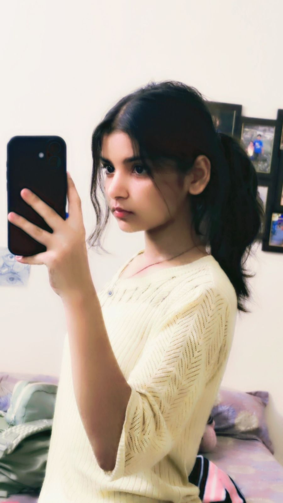
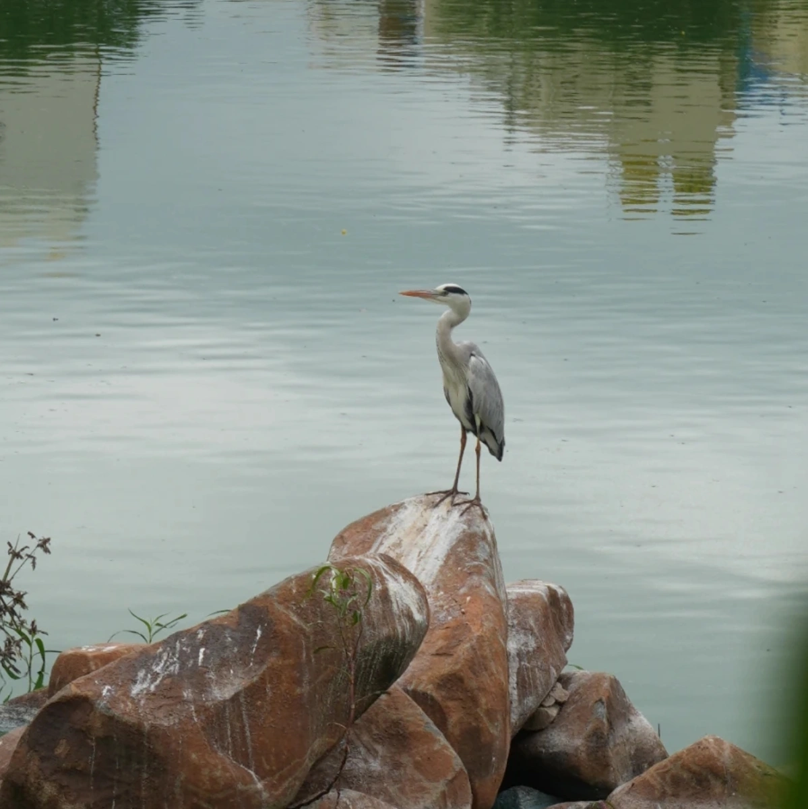
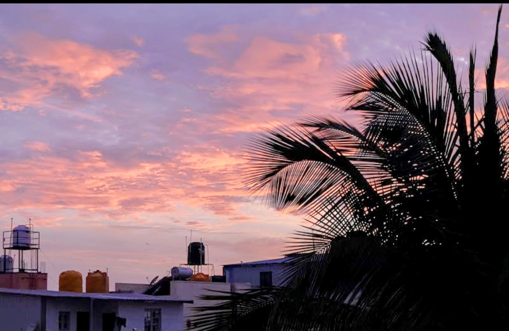
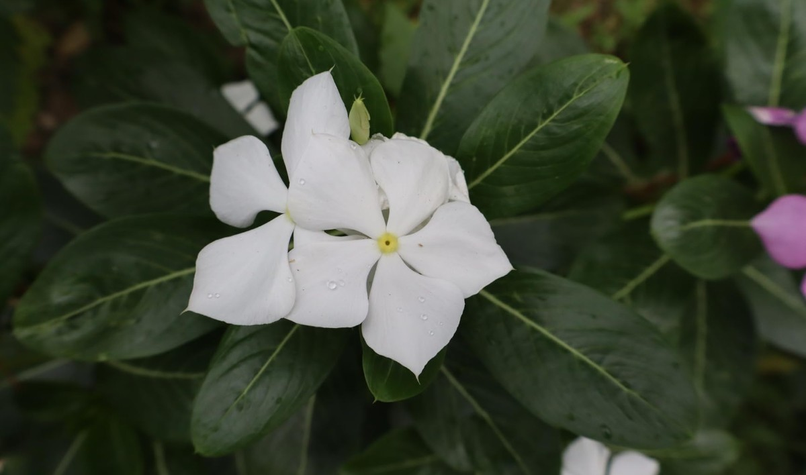
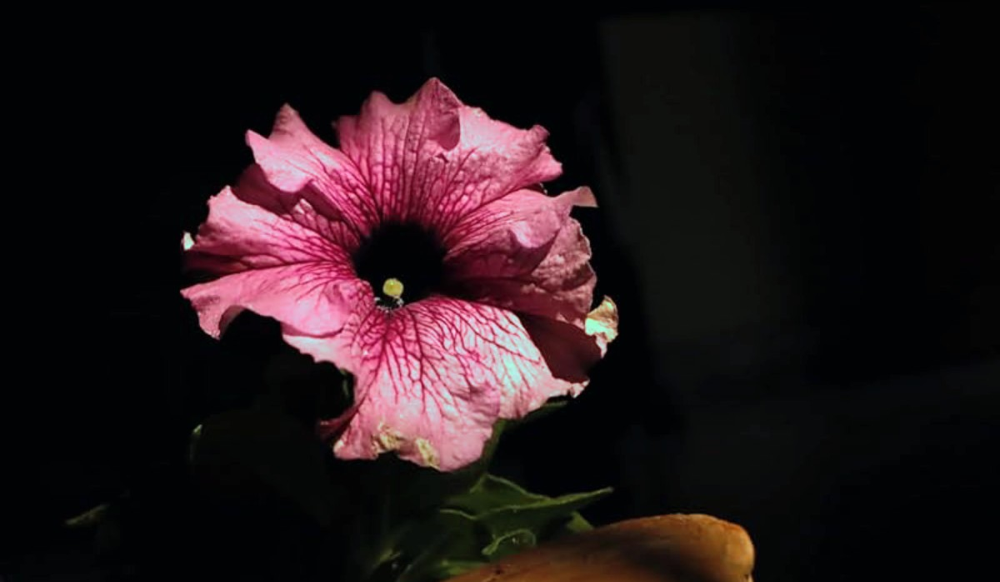
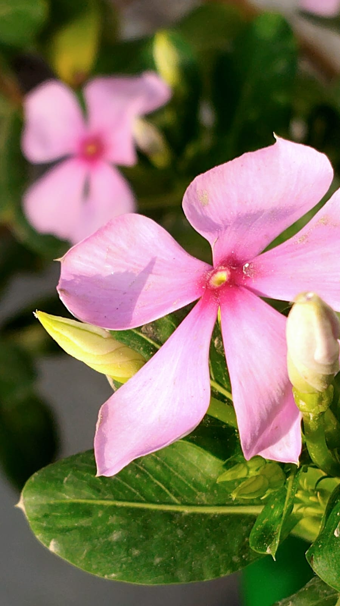
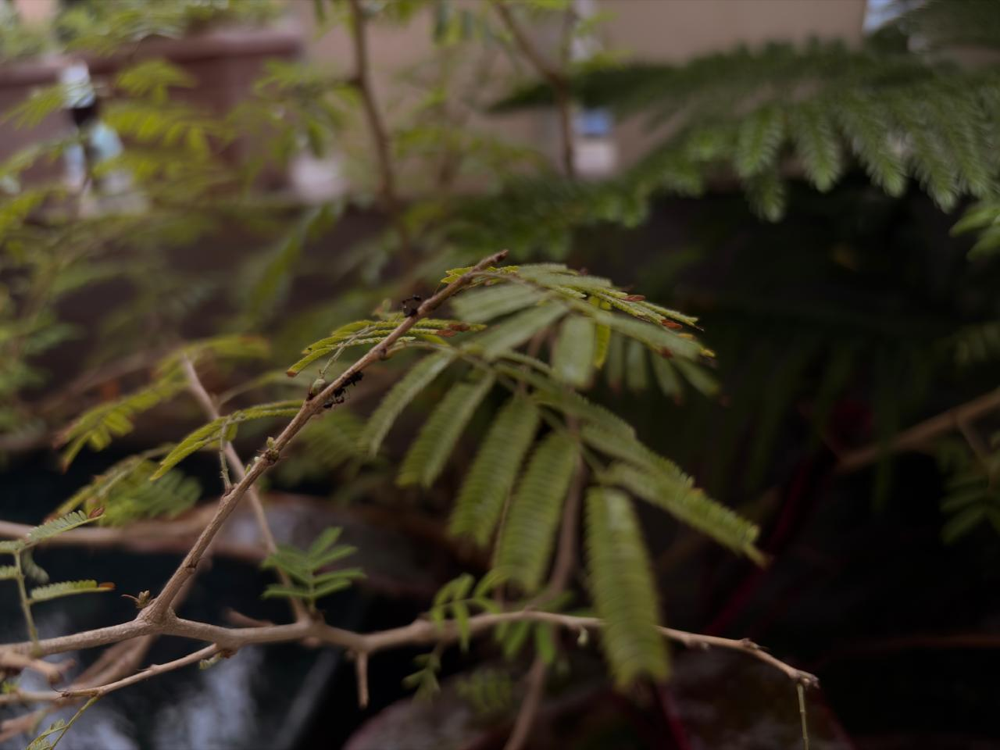

Remember to Live.

If you're reading this... welcome. Maybe you clicked because of a photograph. Maybe you were simply curious. Whatever brought you here— I'm glad you stayed. I don't think art exists to impress people. I think it exists because some feelings become too heavy for words. So I keep creating. Because ordinary moments deserve to be remembered.
A collection of ordinary moments I didn't want to forget.

Water remembers every place it has been.
Some evenings feel like they're trying to apologize.
Perfection usually grows quietly.
Soft things survive too.
Nature whispers before it speaks.
Even the smallest lives carry stories.Sometimes I wonder how many beautiful things disappear simply because nobody looked at them. A flower. A stranger. A sunset. A quiet street. Photography lets me remember things that would've quietly slipped away.
Maybe life isn't about finding extraordinary moments. Maybe it's about noticing ordinary ones.
Hi, I'm Sakshi. Art has always been my way of making ordinary moments feel meaningful. When life becomes repetitive, I reach for my phone and start looking— for light, reflections, flowers, people and places. I don't create because everything is beautiful. I create because beauty often goes unnoticed. If something here made you pause for even a second, then maybe I've done my job.
Every photograph here was taken using a phone. Not because I don't dream of better equipment— but because creativity shouldn't wait. Some moments only exist once. I'd rather capture them imperfectly than miss them completely.
Go outside. Notice something ordinary. A flower. A shadow. The evening sky. Someone smiling. Take one picture. Keep it. One day it'll become one of your favourite memories.
Instagram
@sakshi.in4k
Email
heyy.sukku@gmail.com
YouTube
youtube.com/@sakshi.in4k
Most people only scroll. You noticed. Keep creating.